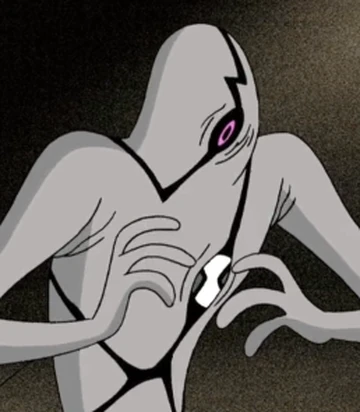

Fantasmático

| Poderes | Fraquezas |
|---|---|
| Consegue ficar invisível e atravessar objetos sólidos. | Ataques elétricos e ondas sonoras podem afetá-lo. |
| Pode possuir seres vivos e controlar seus movimentos. | Redes de alta tecnologia podem prendê-lo, mesmo intangível. |
| Possui tentáculos extensíveis capazes de agarrar objetos pesados. | Algumas substâncias podem anular sua invisibilidade e intangibilidade. |
Sobre sua raça
Os Ectonuritas são uma espécie alienígena do planeta Anur Phaetos, formada por seres humanoides de aparência fantasmagórica, constituídos por uma estrutura biológica capaz de se tornar intangível. Possuem corpos esbranquiçados, olhos rosados, uma cabeça alongada e uma espécie de capa que envolve parte de seu corpo. São conhecidos principalmente pela capacidade de atravessar objetos sólidos, ficar invisíveis e flutuar, podendo também voar livremente. Além disso, conseguem possuir outros seres, disparar rajadas de energia, produzir tentáculos e alterar sua própria aparência. Sua estrutura corporal permite sobreviver em condições extremas, mas apresentam fraqueza à luz intensa, especialmente à radiação ultravioleta, que pode causar danos à sua forma física.